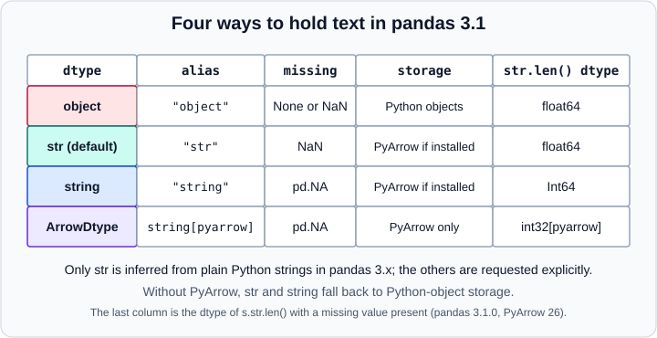

Text Data & the str Dtype in pandas
|
This content was generated with the assistance of AI and should be verified against the official documentation before being relied on in production. |
Since pandas 3.0 text columns are stored in a dedicated str dtype instead of Python objects. This page explains what
that dtype is, how it differs from the older object columns and from the opt-in "string" dtype, how to move code
from pandas 2, and how to use the .str accessor to clean and extract text. It targets pandas 3.1 on Python 3.13 or
3.14 and was checked in October 2026. Every example was run with Python 3.13, NumPy 2.5.4, pandas 3.1.0 and PyArrow
26.0.0, and the printed output is the real output. Other string-related pandas topics have their own pages:
Missing Data, Categorical Data,
Nullable Integer & Boolean and
PyArrow-Backed Data. The NumPy view of text is in
Strings, Bytes & StringDType, and the Python language itself in
Strings and Text.
All examples assume the standard imports:
import numpy as np
import pandas as pdThe default str dtype
A Series built from Python strings now has the dtype str:
s = pd.Series(["apple", None, "cherry"])
print(s)
print(s.dtype, repr(s.dtype))
print(s.dtype.na_value, s.dtype.storage)
print(pd.api.types.is_string_dtype(s), s.dtype == object, s.dtype == "str")0 apple
1 NaN
2 cherry
dtype: str
str <StringDtype(na_value=nan)>
nan pyarrow
True False Truestr is an instance of pd.StringDtype(na_value=np.nan), spelled "str" as an alias. It is a pandas extension dtype,
not a NumPy dtype, so it cannot be passed to NumPy functions or to np.issubdtype. Its missing value is np.nan; the
same is true of the None in the list above, which pandas converted. Because the dtype is not object, the old test
ser.dtype == object is now False: use pd.api.types.is_string_dtype or compare with "str".
The figure compares the four ways to hold text.

Storage
When PyArrow is installed the values are stored in Arrow memory. Without PyArrow, pandas falls back to Python objects internally but keeps the same semantics, so code behaves the same either way; only memory and speed differ. PyArrow remains an optional dependency of pandas 3.1. The storage is visible on the dtype:
print(pd.StringDtype("python", na_value=np.nan)) # str
print(pd.StringDtype("pyarrow")) # string
print(pd.StringDtype("pyarrow", na_value=np.nan)) # str
print(pd.Series(["a", None], dtype=pd.StringDtype("python", na_value=np.nan)).array.__class__.__name__)str
string
str
StringArraySource: pandas.StringDtype.
The str dtype only holds valid Unicode text. A lone surrogate such as "\ud83d" raises UnicodeEncodeError when it is
stored; keep such data in an object column.
Memory and speed
The Arrow-backed storage is considerably smaller and faster than Python objects. One million values drawn from five words, on the machine used for this page:
import time
rng = np.random.default_rng(0)
words = np.array(["alpha", "beta", "gamma", "delta", "epsilon"])
raw = words[rng.integers(0, 5, 1_000_000)].tolist()
for label, dt in [("object", object), ("str", "str"),
("string[python]", pd.StringDtype("python")), ("string[pyarrow]", pd.StringDtype("pyarrow"))]:
s = pd.Series(raw, dtype=dt)
t = time.perf_counter(); s.str.upper(); elapsed = time.perf_counter() - t
print(f"{label:16} {s.memory_usage(deep=True) / 1e6:7.1f} MB upper: {elapsed * 1000:6.1f} ms")object 54.2 MB upper: 47.6 ms
str 13.2 MB upper: 8.9 ms
string[python] 54.2 MB upper: 45.4 ms
string[pyarrow] 13.2 MB upper: 8.9 msThe absolute timings depend on the machine; the ratio (about 4 times less memory and 5 times faster here) is what matters.
Without PyArrow the str dtype has the memory profile of object.
The four representations
object |
str (default) |
"string" |
pd.ArrowDtype(pa.string()) |
|
|---|---|---|---|---|
Created by |
|
Plain Python strings, |
|
|
Missing value |
|
|
|
|
Holds non-strings |
Yes |
No ( |
No |
No |
|
|
|
|
|
Comparison result |
|
|
|
|
The important consequence is that the missing-value sentinel differs. With str, operations on missing values return
NaN or False, exactly like numeric NumPy-backed columns, so code written for pandas 2 object columns keeps working.
With "string", comparisons and string methods propagate pd.NA and return nullable result dtypes, which is more
consistent but changes downstream types:
a = pd.Series(["x", None], dtype="str")
b = pd.Series(["x", None], dtype="string")
print((a == "x").tolist(), (b == "x").tolist())
print(a.str.len().dtype, b.str.len().dtype, a.str.contains("x").dtype, b.str.contains("x").dtype)[True, False] [True, <NA>]
float64 Int64 bool booleanSource: pandas.Series.str.len.
Use pd.isna (or Series.isna()) to test for missing text rather than comparing with None or np.nan. The nullable
"string" dtype and ArrowDtype keep working unchanged in pandas 3; the pandas 3 migration guide describes the new str
dtype as the default and the other two as the explicit, pd.NA-based choices.
Differences from object
-
ser.valuesreturns an extension array; useser.to_numpy()to get a NumPy array (ofobjectdtype forstr). -
Assigning a non-string raises
TypeErrorinstead of upcasting; cast toobjectfirst if you need mixed content. -
astype(str)keeps missing values as missing instead of turningNaNinto the text"nan". -
Reductions that make no sense for text, such as
prod(), consistently raiseTypeError. -
dtype=objectgiven explicitly is respected: such columns stayobject.
t = pd.Series(["a", "b"], dtype="str")
try:
t.iloc[0] = 5
except TypeError as err:
print("TypeError:", err)
print(pd.Series(["a", 1, 2.0]).dtype) # mixed data stays object
print(pd.Series([1.5, None]).astype("str").tolist()) # missing stays missing
print(pd.Series([1, 2]).astype("str").dtype)
print(pd.Series(["a", None]).to_numpy())TypeError: Invalid value '5' for dtype 'str'. Value should be a string or missing value, got 'int' instead.
object
['1.5', nan]
str
['a' nan]Source: pandas.DataFrame.astype.
Where str is inferred
pandas infers str when it builds a column of strings (constructors, read_csv, read_parquet, read_json and so on),
and a column of only None or only NaN stays object or float64 because nothing says that it holds text. Index
labels follow the same rule:
print(pd.Index(["a", "b"]).dtype)
df = pd.DataFrame({"n": [1], "t": ["a"]})
print(df.dtypes)
print(pd.Series([np.nan, "a"]).dtype, pd.Series([None, None]).dtype)str
n int64
t str
dtype: object
str objectSource: pandas.StringDtype.
The columns Index of a DataFrame built from string labels is str too, as the pivot output on
Pivot & Pivot Tables shows.
Migrating code from pandas 2
The migration guide recommends testing on pandas 2.3 with pd.options.future.infer_string = True first. In pandas 3.1
that option still exists but is deprecated and will be removed in pandas 4.0: inferring str is the default and can no
longer be turned off. The steps are:
-
Replace
dtype == "object"checks withpd.api.types.is_string_dtype(ser.dtype)orser.dtype == "str". -
Test missing values with
pd.isnaorSeries.isna(), not withis Noneor== np.nan. -
Replace
.valueswith.to_numpy(). -
Where you assign non-strings into a text column, call
astype(object)first. -
Review
astype(str): useser.map(str)if you need every element stringified, including missing values. -
Keep
dtype=objectwhere you need arbitrary Python objects or invalid Unicode. -
Select string columns explicitly.
Column selection deserves care. select_dtypes(include="object") still returns str columns in pandas 3.1 for backward
compatibility, but it emits a deprecation warning (a Pandas4Warning in pandas 3.1) because that behaviour will be
removed. The form that works on pandas 2 and 3 is:
df = pd.DataFrame({"n": [1], "t": ["a"], "o": pd.Series([object()], dtype=object)})
print(df.select_dtypes(include=["object", "string"]).columns.tolist())
print(df.select_dtypes(include="str").columns.tolist())['t', 'o']
['t']Code that targets only pandas 3 should write include="str" for text and include=object for arbitrary objects.
scikit-learn selectors such as make_column_selector(dtype_include=object) are discussed in
ColumnTransformer & Heterogeneous Data; select text columns by
name or with dtype_include="str" on pandas 3.
The .str accessor
String methods live under Series.str and Index.str. They are vectorised, skip missing values and mirror the methods
of Python’s str type, with a few regular-expression extras. The accessor works on str, string, ArrowDtype strings,
and on object columns that hold only strings (and missing values); on other data it raises AttributeError:
try:
pd.Series([1, 2]).str.len()
except AttributeError as err:
print("AttributeError:", err)AttributeError: Can only use .str accessor with string values, not integerThe examples below use this sample:
s = pd.Series([" Alice Smith ", "bob.jones@example.org", None, "CAROL O'Neil", "dave 42"])Cleaning and case
print(s.str.strip().str.lower().tolist())
print(s.str.len().tolist())
print(pd.Series(["ß", "É"]).str.casefold().tolist())
print(pd.Series(["7", "42", "x"]).str.zfill(4).tolist())
print(pd.Series(["7"]).str.pad(4, side="left", fillchar="*").tolist())['alice smith', 'bob.jones@example.org', nan, "carol o'neil", 'dave 42']
[13.0, 21.0, nan, 13.0, 7.0]
['ss', 'é']
['0007', '0042', '000x']
['***7']Source: pandas.Series.str.strip.
casefold is the right choice for caseless comparison. strip, lstrip and rstrip take a set of characters, title,
capitalize and swapcase change case, and normalize("NFC") brings composed and decomposed Unicode forms to one
representation:
accents = pd.Series(["é", "é"])
print(accents.str.len().tolist(), accents.str.normalize("NFC").str.len().tolist())[1, 2] [1, 1]Source: pandas.Series.str.len.
Tidying column labels is a common use of Index.str:
d = pd.DataFrame({" A ": [1], "B C": [2]})
d.columns = d.columns.str.strip().str.lower().str.replace(" ", "_")
print(d.columns.tolist())['a', 'b_c']Source: pandas.Series.str.strip.
Testing: contains, match, startswith
contains searches with a regular expression by default; match anchors at the start and fullmatch at both ends.
na= decides what a missing value yields:
import re
print(s.str.contains("o", case=False).tolist())
print(s.str.contains("o", na=False).tolist())
print(s.str.startswith("b").tolist(), s.str.endswith("org").tolist())
print(pd.Series(["ab12", "12"]).str.match(r"[a-z]+").tolist(), pd.Series(["ab12", "12"]).str.fullmatch(r"\d+").tolist())
print(pd.Series(["Foo", "foo"]).str.contains("foo", flags=re.IGNORECASE).tolist())[False, True, False, True, False]
[False, True, False, False, False]
[False, True, False, False, False] [False, True, False, False, False]
[True, False] [False, True]
[True, True]Source: pandas.Series.str.contains.
For str columns a missing value gives False in contains; for "string" columns it gives pd.NA, which cannot be
used directly as a boolean mask. Pass na=False (or fill) when you build a filter.
Replace
str.replace treats the pattern as literal text by default (regex=False). Older tutorials show regex behaviour by
default, which was the default before pandas 2.0:
print(pd.Series(["a.b"]).str.replace(".", "-").tolist())
print(pd.Series(["a.b"]).str.replace(".", "-", regex=True).tolist())
print(s.str.replace(r"\s+", " ", regex=True).tolist())
print(s.str.replace(r"(\w+)@(\w+)", r"\2 at \1", regex=True).tolist())
print(pd.Series(["a1b22"]).str.replace(r"\d+", lambda m: str(int(m.group()) * 2), regex=True).tolist())['a-b']
['---']
[' Alice Smith ', 'bob.jones@example.org', nan, "CAROL O'Neil", 'dave 42']
[' Alice Smith ', 'bob.example at jones.org', nan, "CAROL O'Neil", 'dave 42']
['a2b44']Source: pandas.Series.str.replace.
With regex=True, repl may be a function that receives the match object, and backreferences such as \2 work. Use
str.translate with a table for character-by-character mappings, and removeprefix and removesuffix for exact
prefixes:
print(pd.Series(["a1"]).str.translate(str.maketrans({"1": "one"})).tolist())
print(s.str.removesuffix(".org").tolist()[1])['aone']
bob.jones@exampleSource: pandas.Series.str.translate.
Splitting and joining
split returns lists, or with expand=True several columns. partition always returns three columns (the part before,
the separator and the part after). cat concatenates the elements of a Series with a separator, and get_dummies turns
delimited tags into indicator columns:
print(s.str.split(r"\s+", regex=True, n=1, expand=True))
print(s.str.partition("@"))
print(s.str.cat(sep="|", na_rep="?"))
print(s.str.cat(["1", "2", "3", "4", "5"], sep="-", na_rep="?").tolist())
print(pd.Series(["a|b", "b|c", None, "a"]).str.get_dummies()) 0 1
0 Alice Smith
1 bob.jones@example.org NaN
2 NaN NaN
3 CAROL O'Neil
4 dave 42
0 1 2
0 Alice Smith
1 bob.jones @ example.org
2 NaN NaN NaN
3 CAROL O'Neil
4 dave 42
Alice Smith |bob.jones@example.org|?|CAROL O'Neil|dave 42
[' Alice Smith -1', 'bob.jones@example.org-2', '?-3', "CAROL O'Neil-4", 'dave 42-5']
a b c
0 1 1 0
1 0 1 1
2 0 0 0
3 1 0 0Source: pandas.Series.str.split.
The first split shows a usual surprise: the leading space of " Alice Smith " produces an empty first field. Strip before
splitting. To turn each element into its own row, combine split with explode, as shown in
Melt, Stack & Explode.
Extracting with regular expressions
extract captures the groups of the first match into columns (named groups name the columns). extractall returns one
row per match with a match level in a MultiIndex, and findall returns the list of matches:
print(s.str.extract(r"(?P<user>[\w.]+)@(?P<domain>[\w.]+)"))
print(s.str.extract(r"(\d+)", expand=False).tolist())
print(s.str.extractall(r"([aeiou])").head(4))
print(s.str.findall(r"[A-Z]").tolist())
print(s.str.count(r"[aeiou]").tolist()) user domain
0 NaN NaN
1 bob.jones example.org
2 NaN NaN
3 NaN NaN
4 NaN NaN
[nan, nan, nan, nan, '42']
0
match
0 0 i
1 e
2 i
1 0 o
[['A', 'S'], [], nan, ['C', 'A', 'R', 'O', 'L', 'O', 'N'], []]
[3.0, 7.0, nan, 2.0, 2.0]Source: pandas.Series.str.extract.
extract needs at least one capture group. The extracted digits are text ('42'), so convert them with
pd.to_numeric.
Slicing and indexing
.str.slice(start, stop) and the .str indexing syntax both work per element:
print(s.str.slice(0, 3).tolist())
print(s.str[:3].tolist(), s.str[-2:].tolist())[' Al', 'bob', nan, 'CAR', 'dav']
[' Al', 'bob', nan, 'CAR', 'dav'] ['h ', 'rg', nan, 'il', '42']Source: pandas.Series.str.slice.
Character classes
isdigit, isnumeric and isdecimal follow Python’s definitions, which differ for non-ASCII digits and fractions:
n = pd.Series(["١٢٣", "12", "½", "a"])
print(n.str.isdigit().tolist(), n.str.isnumeric().tolist(), n.str.isdecimal().tolist())[True, True, True, False] [True, True, True, False] [True, True, False, False]Source: pandas.Series.str.isdigit.
isalpha, isalnum, isspace, islower, isupper and istitle complete the family.
Behaviour on object and categorical columns
On an object column the same methods work and return the same values, with None handling that mirrors the older
behaviour:
o = pd.Series(["a", None], dtype=object)
print(o.str.upper().tolist(), o.str.len().tolist(), o.str.contains("a").tolist())
c = pd.Series(["a", "b", "a"], dtype="category")
print(c.str.upper().dtype, c.cat.categories.dtype)['A', None] [1.0, nan] [True, None]
object strNote the None in the object result of contains, a reason to convert text columns to str early. A categorical column
keeps its categories as str, while the result of a .str method on it is a plain object Series in pandas 3.1; see Categorical Data for when categoricals pay off with text.
Other places where text matters
-
Reading files:
read_csv,read_json,read_parquetand the other readers inferstrfor text columns. Passdtype={"col": "category"}ordtype_backend="pyarrow"to choose otherwise; see CSV & Text Files. -
Missing text:
fillna("")keeps thestrdtype, andisna()finds missing values; see Missing Data. -
Sorting and counting:
sort_values,value_countsanduniquework onstrcolumns and keep missing values asNaN(dropna=Falselists them). -
Machine learning: turn text into numbers with scikit-learn’s vectorisers; see Feature Engineering.
-
Cleaning workflow: for the wider strategy of fixing inconsistent labels, see Data Cleaning & Preparation. The R counterpart is stringr, tidyr and purrr; for SQL see SQL functions.
Pitfalls
-
Mixed types stay
object, and.stron them givesNaNfor the non-strings. Convert withastype("str")after checking what the odd values are. -
A text column used as a join key must have the same dtype on both sides; see Merge & Join.
-
Comparing
strand"string"columns returns different result dtypes; pick one representation per project. -
str.replaceis literal by default; passregex=Truefor patterns. -
str.containswith special characters (.,(,+) is a regular expression; passregex=Falsefor literal search. -
Slow row-wise
applyof Python string functions is rarely needed: the vectorised.strmethod is usually several times faster onstrcolumns.
Older tutorials and books
| Older statement | Current state (pandas 3.1, October 2026) |
|---|---|
Text columns have dtype |
They have dtype |
|
|
|
Missing values are preserved in the |
PyArrow becomes a required dependency in pandas 3.0. |
PyArrow stays optional in pandas 3.1; |
|
The option is deprecated in 3.1 and will be removed in 4.0; the behaviour is already the default. |